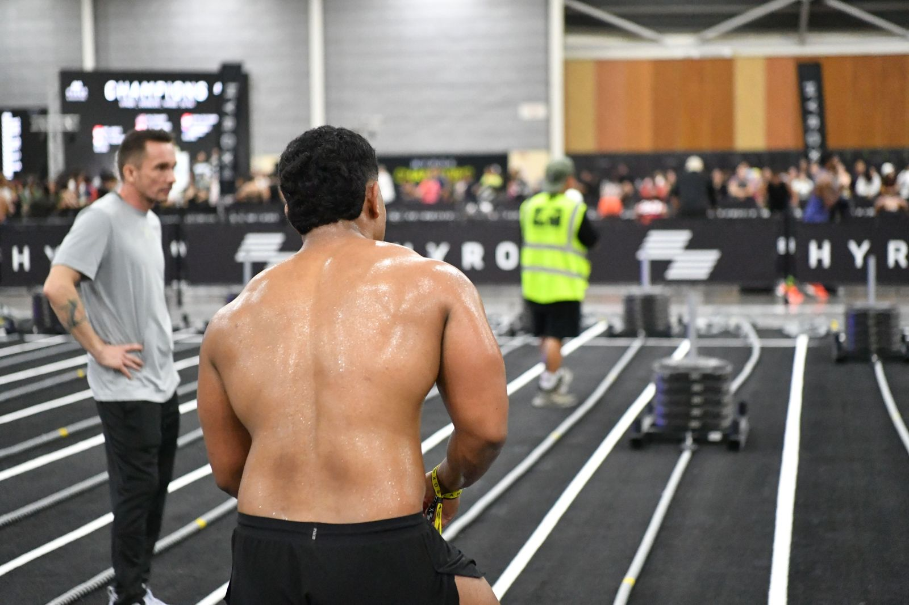

HYROX Paris 2026
Du 12 au 20 décembre 2026 à Paris Expo Porte de Versailles : la « course de fitness » qui réunit débutants et athlètes de haut niveau sur le même parcours.
Qu'est-ce que l'HYROX ?
Créé à Hambourg en 2017, l'HYROX est une compétition qui mélange course à pied et exercices de fitness fonctionnel. Le format ne change jamais : 8 fois 1 km de course, chaque kilomètre étant suivi d'une station d'exercice.
Ce format identique dans toutes les villes du monde permet à chaque participant de comparer son temps avec les autres et de mesurer sa progression d'une course à l'autre. C'est l'une des raisons de son succès, et l'un des sujets de mon mémoire.

Le format de la course
Les 8 stations
Chaque station se fait après 1 km de course. Charges indiquées pour la catégorie Open (femmes / hommes).
| N° | Station | Distance / répétitions | Charge Open F / H |
|---|---|---|---|
| 1 | SkiErg | 1 000 m | – |
| 2 | Sled Push (pousser un traîneau) | 50 m | 102 kg / 152 kg |
| 3 | Sled Pull (tirer un traîneau) | 50 m | 78 kg / 103 kg |
| 4 | Burpees sautés | 80 m | – |
| 5 | Rameur | 1 000 m | – |
| 6 | Farmer's Carry (porter deux kettlebells) | 200 m | 2 × 16 kg / 2 × 24 kg |
| 7 | Fentes marchées avec sac lesté | 100 m | 10 kg / 20 kg |
| 8 | Wall Balls | 100 répétitions | 4 kg / 6 kg |
Les catégories
Open
En solo, avec les charges standards. La catégorie la plus courue, idéale pour une première participation.
Pro
En solo, avec des charges plus lourdes. Elle est réservée aux athlètes confirmés.
Doubles
En binôme (femmes, hommes ou mixte) : les deux partenaires courent ensemble et se partagent les exercices.
Relais
En équipe de quatre : chaque membre fait 2 km de course et 2 stations.